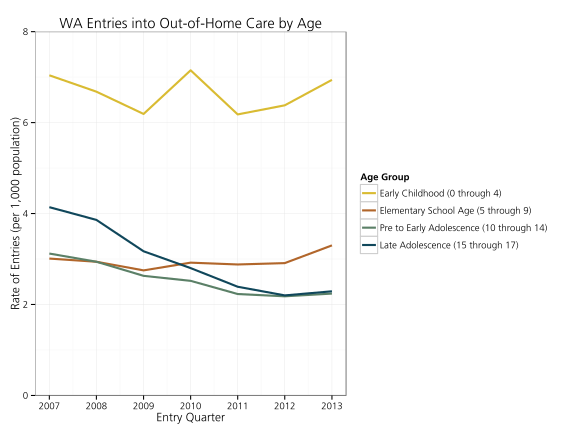

County Dashboard
|
||
Out-of-Home Care
Outcomes by Age

Child Maltreatment
Victimized children include those who are the subject of at least one substantiated or indicated maltreatment report, and/or who were identified as alternative response victims. Rates of maltreated children are per 1,000 children less than 18 years old. Select a region below to compare, or scroll over the graph to highlight countries. Read more at http://www.ndacan.cornell.edu.
Nationwide
603,854 children were confirmed as victims of maltreatment in 2012.
Source: Kids Count Data Center